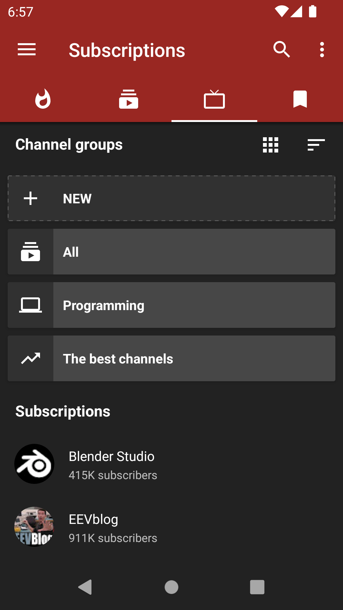

NewPipe 深度盘点：一个不想当"YouTube替代品"的流媒体全能选手
它不只是去广告的YouTube——多平台聚合、无账号订阅、自由下载、分组Feed，这五个能力域拼在一起，构成了NewPipe为何在开源社区持续走红的完整答案。
如果你用过YouTube的官方App，大概对两件事深有体会：一是广告和推荐算法让人越来越难找到自己真正想看的东西，二是你不得不交出浏览数据来换一个相对流畅的体验。NewPipe从根本上不打算在这个游戏里竞争——它完全不依赖YouTube的官方API，也不要求你登录任何账号，就把视频、音频、直播、订阅这一套东西原汁原味地端给你。它的官网上明确写着自己是一个"轻量的自由YouTube前端"，没有广告，也不追踪任何用户数据。
这种"另起炉灶"的思路让NewPipe在开源圈积累了超过百万下载量，但很多人对它的认知还停留在"去广告版YouTube"。实际上NewPipe的能力面远不止于此——它把流媒体消费这件事拆成了好几个独立的维度，每个维度都做了扎实的设计。我们不妨系统性地盘点一下。
多平台统一入口：从主流视频到小众归档
NewPipe最容易被忽视的一点是它根本不只服务于YouTube。打开应用，左侧侧边栏可以切换的服务列表里，除了YouTube，还有PeerTube（联邦视频平台）、SoundCloud（音频社区）、Bandcamp（独立音乐人平台）、media.ccc.de（全球技术会议录像归档）等——而且每个平台都不是"阉割版适配"，而是完整的浏览、搜索、订阅、下载链路。

media.ccc.de这一项尤其值得提一下。这是德国Chaos Computer Club的会议录像平台，单场演讲动辄二三十分钟，技术密度极高，普通人很少专门去浏览器上找来看。但在NewPipe里订阅之后，这些大会的新录像会自动出现在你的Feed时间线上，和YouTube的科技频道更新混在一起推送，相当于把一整个全球顶级安全会议的录像库搬到了手机里。对于技术爱好者来说，这个价值可能比去广告本身还大。
统一入口带来的另一个好处是跨平台的播放体验完全一致——无论是YouTube的4K视频还是PeerTube的标清流，加载速度、播放控制、字幕切换的操作逻辑都是同一套，不需要在不同应用之间反复适应。
下载与离线：真正的"我存了就是我的"
如果你用过从NewPipe下载拿到的安装包，会发现它的下载模块可能是做得最彻底的功能。视频、音频、字幕可以独立选择是否下载，甚至可以只下音频流来省空间——这对于播客类频道来说特别实用。下载完成的文件会按视频、音频、字幕自动分类到子文件夹里，找起来不用翻半天。
更关键的是下载路径完全自由。NewPipe用Android的Storage Access Framework来管理存储位置，第一次下载时系统弹出文件选择器让你自己挑地方——内部存储、SD卡、甚至通过SAF挂载的云盘都可以。选定之后应用会记住这个权限，下次直接存进去，不会偷偷往某个你不知道的目录塞文件。

当然也有局限：正在进行中的直播流没法完整下载，只能拿到已经播放过的片段；得等直播结束变成回放才能正常下载。还有那个固定的子文件夹结构（video/audio/subtitles）是写死的，没法自定义——虽然影响不大，但如果你有强迫症想按频道分类，就得自己再整理一遍。
订阅与Feed分组：把时间线重新还给你
订阅几十个频道之后，Feed时间线会变成一锅粥——音乐、科技、游戏、新闻的更新混在一起刷，想找某一类内容得往后翻很久。NewPipe在0.28.0版本引入的Feed分组就是为了解决这个问题——翻一下NewPipe文档里的分组管理章节就能看到完整的操作细节：你可以在设置里创建任意数量的分组（比如"音乐""教育""安全"），把订阅频道逐个归入不同的组，Feed页面顶部就会出现分组切换的Tab，点哪个看哪个。
分组还有个聪明的设计：可以把某个分组直接加到主界面的Tab栏上，打开应用就能快速切换，不用先进入Feed页面再选。而且分组信息属于本地数据，导出全量数据的时候会一起打包，换机导入之后分组结构完整恢复，不会丢。
更细的一点是，不同分组可以设置不同的刷新频率——比如"新闻"组设成每小时刷一次，"音乐"组设成每天刷一次，省流量又高效。这种对细节的考量，正是NewPipe和那些"够用就行"的替代品之间的差距。
直播体验：够用但不完美
NewPipe对直播的支持覆盖了YouTube直播和PeerTube直播两个主要来源。打开一个正在直播的视频，界面右上角会显示红色的"LIVE"标签，右侧悬浮窗同步显示实时聊天（Live Chat）的消息流，不需要登录YouTube账号就能看到所有人的发言。直播结束后自动变成回放，和普通视频一样可以快进、下载、看评论。
但直播也是NewPipe短板最明显的地方。和官方YouTube App相比，NewPipe的直播延迟通常高3到10秒——这是因为它需要通过自研的Extractor模块解析流媒体地址，多了一层处理开销。对于看游戏直播、想实时跟着弹幕互动的人来说，这几秒的差距还是能感觉到的。下载方面前面也提到了，正在进行的直播没法完整保存，只能等回放。
隐私优先：从架构层面就不追踪你
NewPipe的隐私设计不是"加了个隐私模式"这种表面功夫，而是从架构根上就不收集数据：
- 不需要登录任何账号——你的订阅、历史、收藏全部存在本地数据库里
- 不使用Google Analytics或任何第三方统计——开发者在官网和F-Droid页面都明确声明了这一点
- 应用权限最小化——只申请网络访问、存储读写和后台播放这几个必需的权限，没有定位、通讯录之类的多余请求
- 不做跨应用追踪——不会和其他应用的使用行为关联
甚至连下载路径的选择方式都是隐私设计的一部分。通过SAF来选目录意味着NewPipe拿到的是一个你主动授予的访问令牌，它只能读写那个具体文件夹，看不到你手机上其他任何文件——这种粒度的权限控制，很多官方应用都做不到。
短板也要说：客观审视它的局限
说了这么多优点，NewPipe也不是银弹。几个比较明显的限制：
Extractor模块是它的命门，也是最脆弱的环节。YouTube、SoundCloud这些平台时不时会改一下页面结构或流媒体地址的生成逻辑，NewPipe的Extractor如果没来得及跟上，就会出现视频加载不出来、下载失败的情况。虽然开源社区修复速度通常很快，但在那个时间窗口里你可能会短暂断更。
界面设计偏功能主义，谈不上精致。和官方YouTube App那种经过大量用户研究的交互动效相比，NewPipe的界面更像是"能用就行"——没有流畅的过场动画，没有精心设计的空状态，暗色主题的配色也比较朴素。对外观有要求的用户可能会觉得它有点粗糙。
还有一个小问题：Feed时间线的排序逻辑相对简单，只按发布时间倒序，没有"最相关"或"你可能喜欢"之类的智能排序。好处是完全没有算法干预，坏处就是你得自己管理好订阅和分组，不然时间线还是会乱。
什么样的人该用它
盘点下来，NewPipe并不适合所有人。但如果你属于下面这几类，它大概率能给你一个不错的体验：
隐私敏感的YouTube重度用户。你不想让Google知道你在看什么，但又离不开YouTube的内容生态——NewPipe是目前最成熟的选择。它不追踪、不推送个性化广告、甚至连账号都不需要，把YouTube的内容从Google的数据收集体系里剥离了出来。
喜欢离线缓存的通勤党和旅行者。地铁上、飞机上、长途自驾的后座，这些没网的时段恰恰是看视频的黄金时间。NewPipe的独立下载、自由存储路径、按类型自动整理，这套组合拳把离线体验做顺了——你下载的文件就是你自己的，想拷到电脑上、想分享给朋友，都不用绕弯。
技术爱好者和开源社区关注者。media.ccc.de的会议录像、PeerTube的独立创作者、SoundCloud上的实验性音乐——这些在主流平台上存在感不高但质量很高的内容，在NewPipe里可以一站式订阅和消费。而且整个应用本身就是开源项目，源码公开、社区活跃，想深入研究也随时可以。
最后说一句：NewPipe的源码在GitHub、Gitee和GitCode三个平台都有同步维护，想围观它的开发进度或者参与贡献的话，直接找就能找到。对一款完全由社区驱动、没有商业收入的应用来说，能做到今天这个体量和完成度，本身就是一件挺了不起的事。